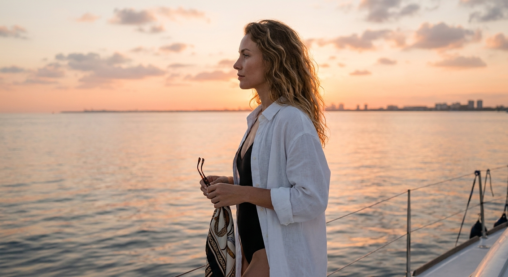
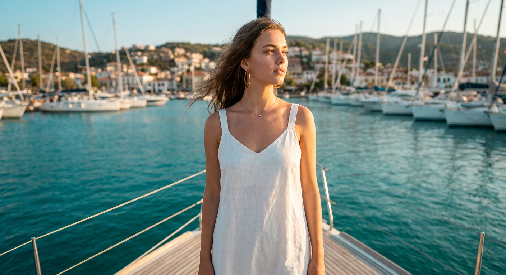
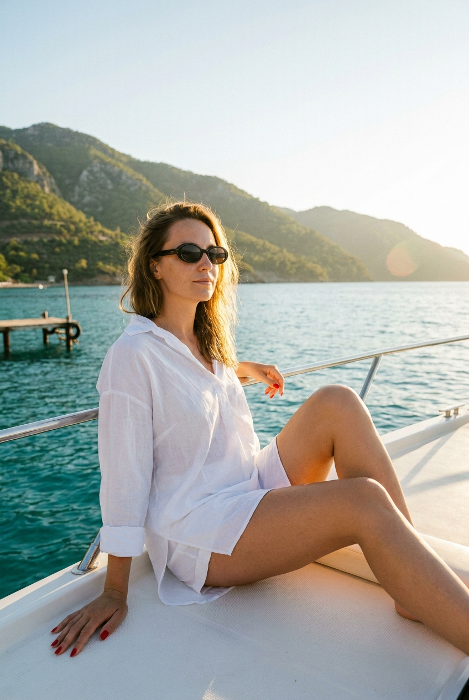
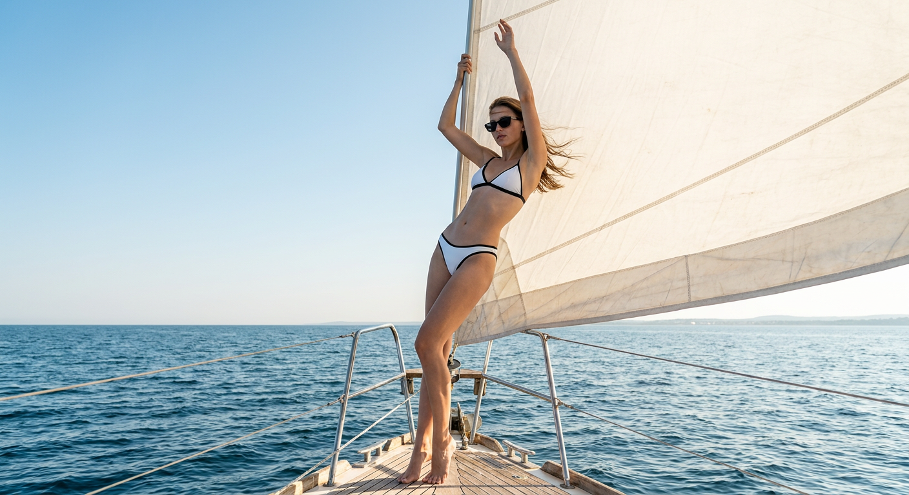
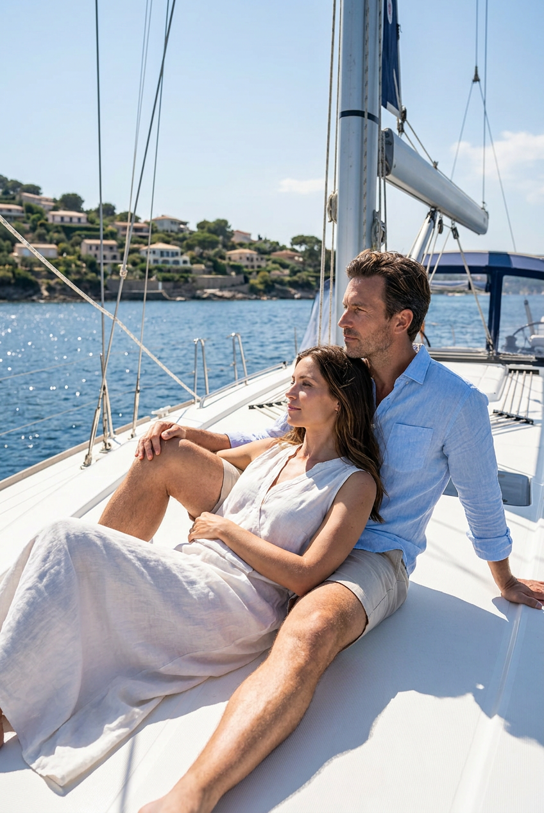
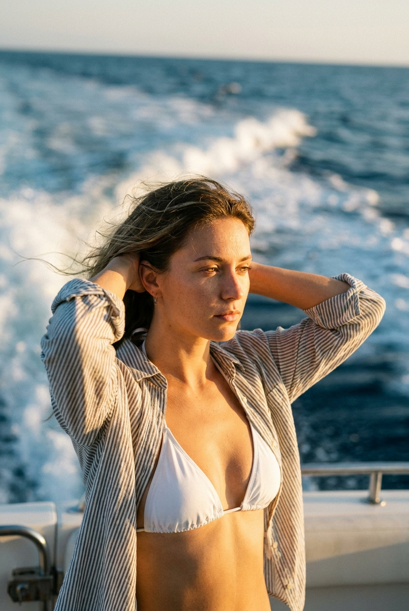
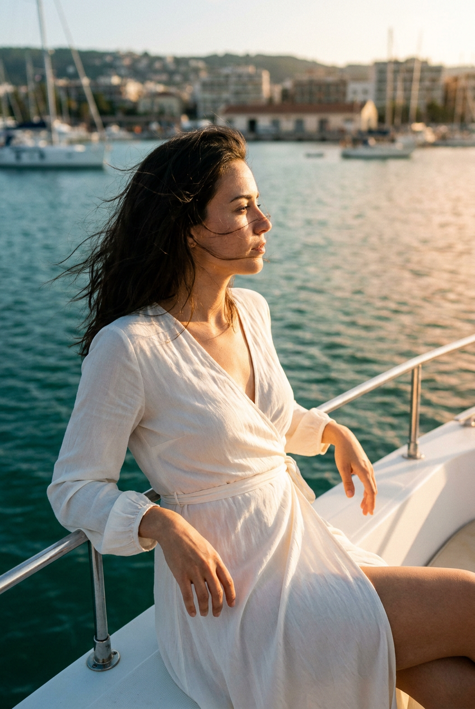
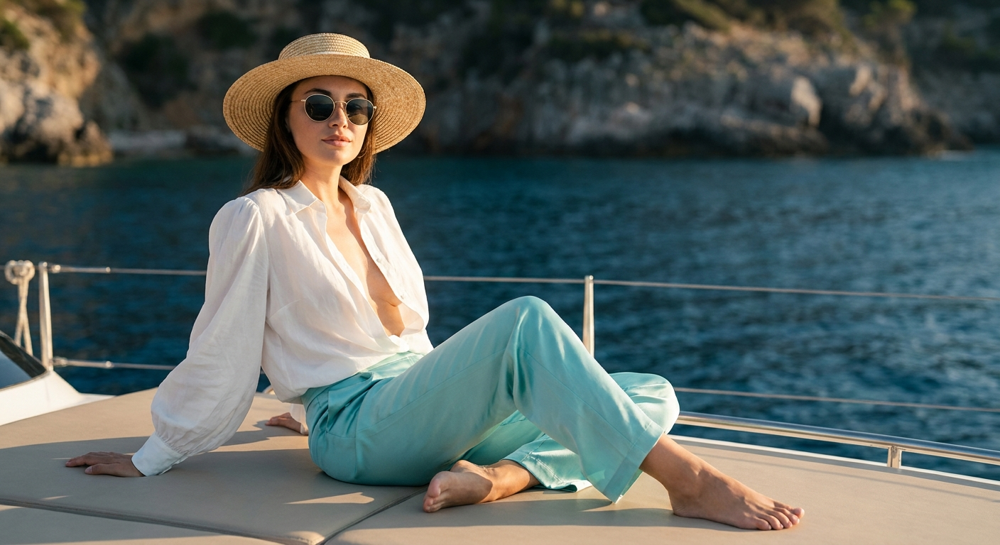
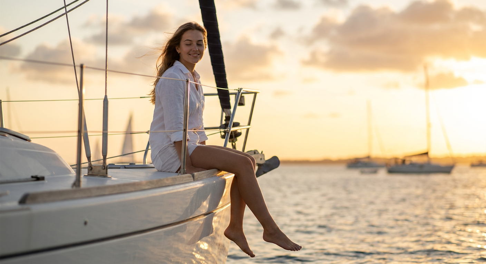
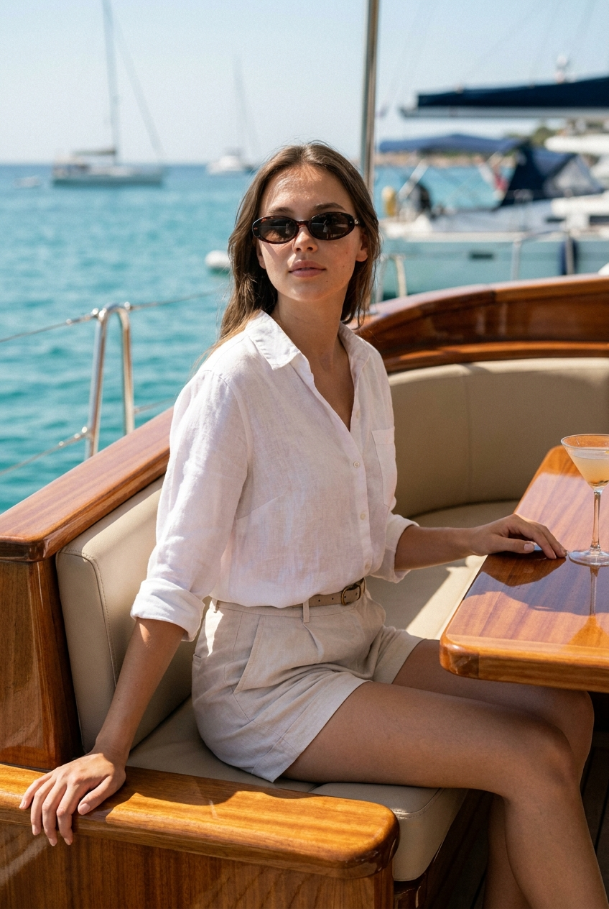

ИИ-фото на яхте: 10 промптов для нейросети

Снимки на яхте выглядят дорого только на первый взгляд: в реальной съёмке мешают ветер, жёсткий свет, случайные люди в кадре и сложные позы. Генерация помогает собрать нужную сцену за несколько попыток — от тихого заката до fashion-портрета на роскошной палубе.
В подборке — 10 готовых промптов для разных сценариев: профиль на золотом часе, белое платье у средиземноморской бухты, кадры в бикини, романтическая пара, съёмка с кормы и спокойные портреты с видом на море.
Как сгенерировать такое фото: пошагово
Нужен снимок анфас при ровном свете, лицо в кадре целиком, без тёмных очков и головных уборов. Разрешение от 1000 пикселей по короткой стороне. Чем чётче исходник, тем точнее модель повторит черты.
Выберите сценарий ниже и нажмите «Копировать» — текст уйдёт в буфер целиком, вместе с командой сохранения внешности. Эта команда стоит первой строкой и отвечает за то, чтобы на выходе было ваше лицо, а не случайное.
Кнопка «Сгенерировать» рядом с каждым промптом открывает модель в новой вкладке. Nano Banana Pro работает с референсом лица — в отличие от моделей, которые генерируют портрет с нуля и узнаваемость теряют.
Промпт — в поле ввода, портрет — через загрузку референса. Порядок значения не имеет, но без референса команда сохранения внешности работать не будет: модели нечего сохранять.
Для сторис и ленты берите 9:16, для превью и обложек — 4:3. Первый результат редко идеален: если поза или свет ушли не туда, поправьте соответствующую часть промпта и запустите заново. Обычно хватает двух-трёх итераций.
10 промптов для генерации
1. Профиль на закате
Строго сохранить внешность по загруженному референсу: черты лица, пропорции, мимику и текстуру кожи без изменений. Фотореалистичный портрет молодой женщины на палубе яхты во время золотого часа. Используй загруженный референс лица: сохрани индивидуальные черты, форму глаз и бровей, нос, губы, овал лица, естественную мимику и исходные пропорции без изменения внешности. Модель показана в профиль, кадр от колен до головы, съёмка с низкого угла по правилу третей. На ней свободная белая рубашка поверх чёрного купальника; в руках солнцезащитные очки и лёгкий платок с ненавязчивым узором. Волнистые волосы подсвечены тёплым контровым и боковым светом. За бортом спокойное море с низким горизонтом, далёкий силуэт города, персиковые облака и золотые отражения в воде. Натуральная тёплая палитра, мягкая глубина резкости, высокая детализация, объектив 35 мм, f/2.8.
2. Белое платье у бухты

Строго сохранить внешность по загруженному референсу: черты лица, пропорции, мимику и текстуру кожи без изменений. Создай фотореалистичный вертикальный кадр молодой женщины в полный рост, стоящей на носу яхты. Лицо возьми с загруженного референса и точно передай форму глаз, бровей, носа, губ, овал лица, мимику, текстуру кожи и пропорции, не меняя внешность. На модели лёгкое белое льняное платье, крупные золотые серьги и тонкая подвеска; макияж естественный. Поза расслабленная, взгляд направлен в сторону, волосы свободно развеваются на ветру. На заднем плане — средиземноморская бухта с бирюзовой водой, причаленными парусниками и городскими домами на холмах. Тёплый боковой свет золотого часа, палуба образует ведущие линии, фокус точно на лице и фактуре льна, фон растворяется в мягком боке. Кинематографичная цветокоррекция, высокая детализация, насыщенные, но натуральные цвета.
3. Задумчивый кадр у воды

Строго сохранить внешность по загруженному референсу: черты лица, пропорции, мимику и текстуру кожи без изменений. Кинематографичная летняя фотография у моря или озера: молодая женщина сидит на борту белой яхты, кадр по колени или до талии. Лицо модели соответствует загруженному референсу — без замены человека, с сохранением формы глаз, бровей, носа, губ, овала, мимики и естественных пропорций. Корпус слегка развёрнут к камере, лицо в пол-оборота вправо, взгляд уходит к горизонту, выражение спокойное и немного задумчивое. Одна нога согнута и стоит на палубе, другая вытянута вниз; одна рука лежит на борту, вторая мягко опирается на одежду или палубу. По краям волос заметна солнечная подсветка. На глазах тёмные очки овальной или слегка кошачьей формы. Белая яхта, тихая вода, летний свет, натуральная кожа и реалистичные детали, вертикальная композиция.
4. Под парусом в море

Строго сохранить внешность по загруженному референсу: черты лица, пропорции, мимику и текстуру кожи без изменений. Фотореалистичная летняя сцена на носу парусной яхты в открытом море. Стройная молодая женщина стоит во весь рост на носках босых ног на деревянной палубе, вытянувшись в грациозной позе; обе руки подняты вверх и держатся за трос или мачту. На ней минималистичное белое раздельное бикини с тонкой чёрной окантовкой и тёмные солнцезащитные очки, волосы слегка треплет ветер. Лицо воспроизведи по загруженному референсу, сохранив узнаваемые черты, форму глаз, бровей, носа, губ, овал лица, мимику и пропорции без изменений. Большой светлый парус занимает значительную часть кадра и просвечивает под солнцем. Вокруг спокойное синее море с мелкими волнами, вдали тонкая линия горизонта и едва различимый берег. Ясное светло-голубое небо без облаков, ощущение жаркого дня, естественный солнечный свет и реалистичная фактура.
5. Романтика на палубе

Строго сохранить внешность по загруженному референсу: черты лица, пропорции, мимику и текстуру кожи без изменений. Фотореалистичный романтический кадр пары на яхте или парусной лодке в солнечный летний день. Используй два загруженных референса лиц: каждый человек должен сохранить собственные форму лица, глаза, нос, губы, мимику, пропорции, естественную кожу и узнаваемость; не смешивай лица и не заменяй людей. Девушка лежит или полулежит на палубе, расслабленно опираясь на мужчину. Он сидит позади и поддерживает её, создавая естественную близость, доверие и ощущение спокойной роскоши. На мужчине простая светлая рубашка и светлые брюки или шорты, на девушке воздушное платье либо элегантный светлый летний комплект. Одежда не свадебная, из мягких натуральных тканей, выглядит дорогой, удобной и слегка движется от ветра. Солнечные блики на воде, белая палуба, непринуждённые позы, реалистичная анатомия, мягкий кинематографичный свет.
6. Закат на корме

Строго сохранить внешность по загруженному референсу: черты лица, пропорции, мимику и текстуру кожи без изменений. Фотографический реалистичный портрет женщины на корме лодки. Лицо модели сделай по загруженному референсу, сохранив индивидуальные черты, форму глаз, бровей, носа, губ, овал лица, естественную мимику и исходные пропорции. На ней белое бикини и свободная полосатая рубашка, волосы развеваются, обе руки заведены за голову. Выражение спокойное, задумчивое, без нарочитой улыбки. Съёмка проходит на закате: золотистый боковой свет очерчивает тело тонким рим-лайтом, на заднем плане видны вспененная траектория лодки и глубокое синее море. Вертикальная композиция, резкость на лице и торсе, малая глубина резкости, мягкая контрастная цветокоррекция, натуральные тёплые оттенки и высокая детализация кожи и ткани. Кинематографичный результат, объектив 85 мм, f/1.8.
7. Профиль на борту

Строго сохранить внешность по загруженному референсу: черты лица, пропорции, мимику и текстуру кожи без изменений. Кинематографичная летняя съёмка на белой яхте в золотой час. Молодая женщина сидит или полусидит на борту, вертикальный кадр, модель расположена справа или ближе к центру переднего плана. Сохрани лицо по загруженному референсу: индивидуальные черты, форму глаз, бровей, носа, губ, овал лица, естественную мимику, текстуру кожи и пропорции. Она показана в пол-оборота и частично в профиль, лицо направлено к горизонту, взгляд спокойный и задумчивый. Одно колено согнуто и стоит у края, вторая нога видна частично; одна ладонь опирается на перила или борт, другая лежит рядом со спинкой. Волосы развеваются, отдельные пряди слегка закрывают лицо. Мягкий макроконтраст, тёплый закатный свет, естественная кожа, белая яхта, спокойная вода, реалистичные детали и вертикальная журнальная композиция.
8. Бирюзовые брюки и море

Строго сохранить внешность по загруженному референсу: черты лица, пропорции, мимику и текстуру кожи без изменений. Фотореалистичный портрет элегантной женщины, сидящей босиком на палубе яхты. Лицо воспроизведи по загруженному референсу с сохранением формы глаз, бровей, носа, губ, овала лица, естественной мимики, кожи и пропорций, без изменения внешности. На ней аккуратная соломенная шляпа, круглые солнечные очки, открытая белая блуза с пышными рукавами и светло-бирюзовые сатиновые брюки. Поза расслабленная, босые ноги видны в кадре. За спиной голубое море и скалистое побережье. Тёплый золотой свет ложится на ткань и кожу, мягкие тени сочетаются с деликатной контровой подсветкой. Сделай акцент на лице, фактуре сатина, плетении шляпы и деталях аксессуаров; фон оставь в мягком боке. Натуральные тона кожи, кинематографичная цветокоррекция, высокая детализация, объектив 85 мм, f/1.8.
9. Ноги над водой

Строго сохранить внешность по загруженному референсу: черты лица, пропорции, мимику и текстуру кожи без изменений. Создай фотореалистичную сцену на носу парусной яхты во время золотого заката. Молодая женщина в белой рубашке и белых шортах сидит на краю, её ноги свисают над водой. Лицо возьми с загруженного референса и сохрани форму глаз, бровей, носа, губ, овал лица, мимику, естественную текстуру кожи и узнаваемые пропорции. Глаза полу закрыты, выражение расслабленное, волосы слегка подхватывает ветер. Модель мягко подсвечена тёплым закатным светом, по контуру заметен лёгкий контровой блик. Вдали размыты горизонт, другие яхты и облака; вода отражает золотые оттенки. Съёмка с низкого угла, портретная композиция по правилу третей, глубокое боке и реалистичные мелкие детали. Цветовой тон — золотой час, объектив 85 мм, f/1.8, ISO 100, выдержка 1/500 с.
10. Уверенный взгляд в камеру

Строго сохранить внешность по загруженному референсу: черты лица, пропорции, мимику и текстуру кожи без изменений. Фотореалистичная летняя fashion-съёмка на роскошной яхте при чистом дневном свете. Молодая женщина сидит на встроенной скамье с подлокотниками, вертикальный кадр, модель занимает центральную часть композиции и смотрит прямо в камеру. Выражение уверенное, спокойное, без напряжения. Корпус выпрямлен, плечи слегка развёрнуты; одна рука лежит на подлокотнике, вторая — на краю сиденья рядом с ним. Ноги согнуты и опираются на деревянные элементы, в кадре частично видны колени и голени. Волосы немного волнистые, отдельные пряди развеваются. На лице тёмные солнцезащитные очки, подчёркивающие взгляд и линию лица. Используй загруженный референс, точно сохранив глаза, брови, нос, губы, овал, мимику, кожу и пропорции. Мягкий контраст, натуральная фактура, дорогая отделка яхты, реалистичный дневной свет.
Что важно учесть в этом стиле
У яхтенных кадров есть три визуальные опоры: направление света, линия горизонта и ветер. Если солнце находится за моделью, добавьте контровую подсветку и уточните, что лицо остаётся читаемым. Для заката подойдут тёплые золотые и персиковые оттенки, для дневной fashion-съёмки — чистый свет без лишней дымки.
Поза должна быть привязана к поверхности: ладонь опирается на борт, стопа стоит на палубе, ноги свисают за край. Такие уточнения помогают нейросети не «сломать» анатомию. Для портрета выбирайте 85 мм и f/1.8, для более просторной сцены — 35 мм и f/2.8.
Идеи для вариаций
- Перенесите сцену из средиземноморской бухты к скалистому побережью Сардинии или на спокойное озеро.
- Замените закат на раннее утро с прохладным голубым светом и лёгким туманом над водой.
- Добавьте шёлковый платок, плетёную сумку, журнал или бокал с безалкогольным напитком.
- Попросите съёмку в стиле обложки журнала: вертикальный кадр 4:5, чистое место под заголовок, минимальный фон.
- Сделайте серию из пяти кадров: профиль, взгляд в камеру, общий план, деталь рук и кадр со спины.
Как собрать свой промпт
Сначала опишите человека и степень сходства с референсом, затем задайте действие и точку съёмки. После этого добавьте одежду, детали позы, окружение, время суток и направление света. В финале укажите кадрирование, объектив, диафрагму и желаемую глубину резкости.
Один промпт лучше посвящать одному главному сценарию. Если одновременно просить сложную позу, нескольких людей, отражения, летящие ткани и мелкий реквизит, результат станет менее предсказуемым. Для точного лица закладывайте 3–6 генераций, а меняйте за один проход только один параметр: свет, одежду или положение камеры.
Ошибки, из-за которых кадр не получается
- Слишком общая поза. Укажите, где находятся колени, ладони и стопы, иначе модель может исказить анатомию.
- Не задано направление света. Без слов «боковой», «контровой» или «свет спереди» лицо часто проваливается в тень.
- Смешение планов. Не просите одновременно портрет 85 мм и широкий пейзажный кадр на 24 мм.
- Перегруженный реквизит. Два-три предмета работают лучше, чем длинный список аксессуаров.
- Нет ограничений для референса. Уточните, что нужно сохранить узнаваемые черты и не смешивать лица, если в сцене участвует пара.
- Игнорирование горизонта. Наклонённая линия воды сразу выдаёт искусственную генерацию, поэтому задайте ровный горизонт или осознанный низкий угол.
Частые вопросы
Как сделать такое ИИ-фото бесплатно?
Можно попробовать Kandinsky и Шедеврум: они подходят для обычной генерации, но точность сходства с лицом и работа с загруженным референсом могут быть ограничены. Krea AI и Arena.ai удобны для тестов и сравнения результатов, однако доступные функции, число попыток и качество референсного режима меняются. Бесплатные варианты обычно требуют нескольких перегенераций и не гарантируют идеальное сохранение лица.
Как сохранить сходство с лицом на яхтенном кадре?
Загрузите чёткий референс без сильных фильтров, отдельно опишите форму глаз, бровей, носа, губ и овала лица. Не меняйте одновременно возраст, причёску и ракурс. Для сложного профиля или очков лучше сделать несколько попыток и выбрать результат с наиболее естественной мимикой.
Какой объектив выбрать для ИИ-фото на яхте?
85 мм при f/1.8 подходит для портрета с мягким размытием фона и акцентом на лице. 35 мм при f/2.8 лучше показывает модель, палубу и море одновременно. Если нужен просторный пейзаж, добавьте низкий угол и укажите широкий план, но не смешивайте это с портретными параметрами.
Почему нейросеть искажает руки и ноги на яхте?
Сложные опоры, свисающие ноги и поднятые руки требуют точного описания. Укажите положение каждой конечности, точки контакта с палубой и направление корпуса. Помогает и более простой кадр: сначала сгенерируйте сцену по колени или по пояс, а затем расширяйте композицию.